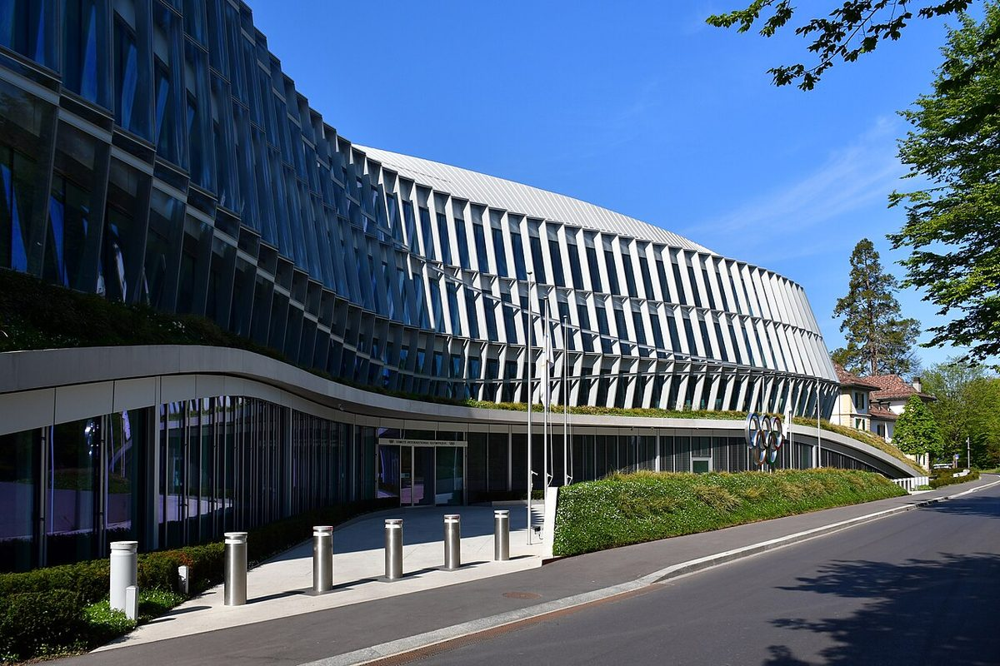

Поворотный момент для честной игры: рождение Всемирного антидопингового агентства в Лозанне
Созданная 10 ноября 1999 года международная структура объединила правительства и олимпийское движение ради защиты честности спорта.

Новые горизонты в олимпийской столице
10 ноября 1999 года ландшафт мирового спорта претерпел фундаментальные изменения. В Лозанне (Швейцария), широко известной как олимпийская столица, делегаты более чем 140 национальных правительств объединили усилия с Международным олимпийским комитетом, чтобы официально учредить Всемирное антидопинговое агентство.
Создание организации стало ответом на нарастающую озабоченность по поводу применения допинг-препаратов в элитном спорте, выросшую из дискуссий, которые почти за год до этого привели к принятию «Лозаннской декларации». Штаб-квартира организации первоначально располагалась в этом швейцарском городе, а в 2002 году основные операционные мощности переехали в канадский Монреаль (провинция Квебек). Задуманное как независимый международный орган, агентство было призвано продвигать, координировать и контролировать борьбу с запрещенными в спорте субстанциями, повышающими результаты.

Лозанна, расположенная на берегах Женевского озера и официально признанная олимпийской столицей с 1994 года, стала идеальным фоном для этого эпохального события. Хотя лозаннский офис организации со временем превратился в региональный хаб для Европы, ВАДА расширило свое глобальное присутствие, открыв другие региональные представительства в Африке, Азии/Океании и Латинской Америке.
Структура и эволюция Всемирного антидопингового кодекса
С самого момента своего зарождения ВАДА строилось на уникальной модели партнерства. Финансируемое на паритетной основе МОК и различными национальными правительствами, его правление (состоящее из 38 человек) и исполнительный комитет (из 16 человек) объединяют точки зрения как государственных органов, так и спортивного движения, включая действующих и завершивших карьеру атлетов. В мае 2025 года Витольд Банька и Ян Ян (Yang Yang) были переизбраны президентом и вице-президентом на третий и последний трёхлетний срок.
Нормативным краеугольным камнем агентства стал Всемирный антидопинговый кодекс, который гармонизировал разрозненные правила международных федераций и национальных организаций. Впервые принятый в Копенгагене в 2003 году, пересмотренный на Всемирной конференции по допингу в спорте в Мадриде в ноябре 2007 года и обновлённый в 2015 и 2021 годах, — Кодекс закрепил стандартизированные протоколы тестирования, научных исследований и образовательных инициатив. Опираясь на сеть примерно из 30 аккредитованных по всему миру лабораторий, ВАДА утвердило Спортивный арбитражный суд в качестве высшей судебной инстанции по допинговым спорам.

Преодолевая противоречия и глядя в будущее
По мере того как организация взрослела в XXI веке, ее решимость сталкивалась с колоссальными институциональными вызовами. В 2016 году академик Ричард Макларен (Richard McLaren), выступавший в качестве независимого следователя по поручению ВАДА, опубликовал доклады, в которых детально утверждалось, что с 2011 по 2015 год более 1000 российских атлетов из более чем 30 видов спорта были вовлечены в государственную систему допинга или получали от нее выгоду. Эти выводы привели к серьезным международным санкциям, включая отстранение многих российских спортсменов от зимних Олимпийских игр 2018 года. Последующие решения ВАДА о снятии определенных запретов вызывали ожесточенные дебаты и критику со стороны информаторов и юридических представителей.
Спустя более чем два десятилетия после своей учредительной конференции в Лозанне ВАДА осуществляет надзор примерно за 700 спортивными организациями-подписантами, связанными обязательствами по Всемирному антидопинговому кодексу. Организация продолжает адаптироваться через специализированные комитеты, такие как Комитет по назначениям, созданный в сентябре 2019 года, первым председателем которого стала независимый деятель Дайан Смит-Гандер (Diane Smith-Gander), и Комиссия атлетов, неизменно стремясь защитить фундаментальное право соревнующихся выступать в справедливой и прозрачной спортивной среде.